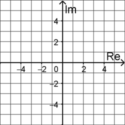
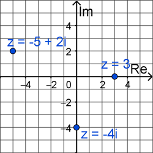

Polar Coordinates
Polar, Parametric, & Vectors
Polar, Parametric, & Vectors
Complex numbers have the form \(z = a + bi\) where \(a\) and \(b\) are Real numbers and \(i = \sqrt{-1}\). We call \(a\) the Real part and \(b\) the Imagianary part. The complex conjugate of \(z = a + bi\) is the complex number \(\bar{z} = a - bi\). The modulus of a complex number represents its distance from the origin, which we can express as \(|z| = \sqrt{a^2 + b^2}\).
Example #5: Determine the complex conjugate and modulus of \(z = 5 - i\).
The complex conjugate of \(z = 5 - i\) is \(\bar{z} = 5 + i\) and the modulus is \(|z| = \sqrt{5^2 + (-1)^2} = \sqrt{25 + 1} = \sqrt{26}\).
We can graph complex numbers on a rectangular grid, similar to the \(xy\)-plane, but now the horizontal axis is the Real axis and the vertical axis is the Imaginary axis.
To graph a complex number \(z = a + bi\), locate the point that is moved horizontally a distance of \(a\) and vertically a distance of \(b\).
Example #6: Graph the following complex numbers.
The complex numbers \(z = 3\), \(z = -4i\), and \(z = -5 + 2i\) are graphed below.
So, how can we connect our knowledge of complex numbers with our understanding of polar coordinates? Since we can think of complex numbers in terms of a rectangular grid, we can use the same formulas as we used when converting rectangular to polar, just using \(a\) and \(b\) instead of \(x\) and \(y\), respectively.
A complex number \(z = a + bi\) in rectangular form can be expressed in the following polar form.
\[z = r\left( \cos{\theta} + i \sin{\theta} \right)\]Let's look at a few examples of converting complex numbers to polar form.
Adding or subtracting complex numbers in their standard rectangular form is pretty easy, but it turns out that multiplying and dividing complex numbers is easier to do when in polar form. The same is true if we want to raise a complex number to a power. So, how can we multiply, divide, and use powers with complex numbers?
Given two complex numbers \(z_{1} = r_{1}\left( \cos{\theta_{1}} + i \sin{\theta_{1}} \right)\) and \(z_{2} = r_{2}\left( \cos{\theta_{2}} + i \sin{\theta_{2}} \right)\), we can multiply and divde according to the following formulas.
\[\begin{align*} z_{1}z_{2} &= r_{1}r_{2}\left( \cos(\theta_{1}+\theta_{2}) + i \sin(\theta_{1}+\theta_{2}) \right) \\[8pt] \frac{z_{1}}{z_{2}} &= \frac{r_{1}}{r_{2}}\left( \cos(\theta_{1}-\theta_{2}) + i \sin(\theta_{1}-\theta_{2}) \right) \end{align*}\]We can also raise a complex number \(z = r\left( \cos{\theta} + i \sin{\theta} \right)\) to a power using the following formula, where \(n\) is any integer. This is called De Moivre's Theorem.
\[z^{n} = r^{n}\left( \cos(n\theta) + i \sin(n\theta) \right)\]©2024 M4thG33x (new window) Some Rights Reserved.